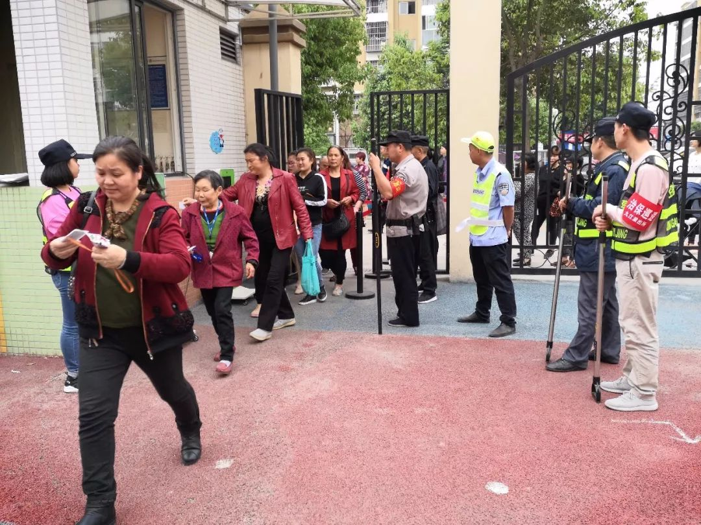
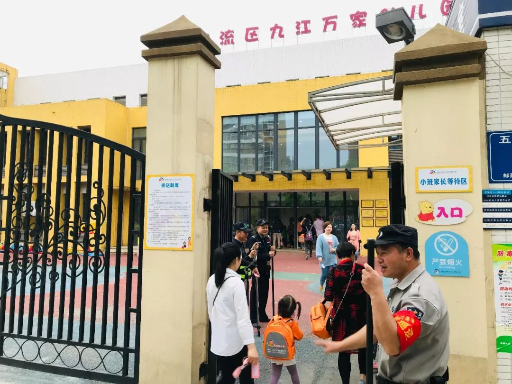
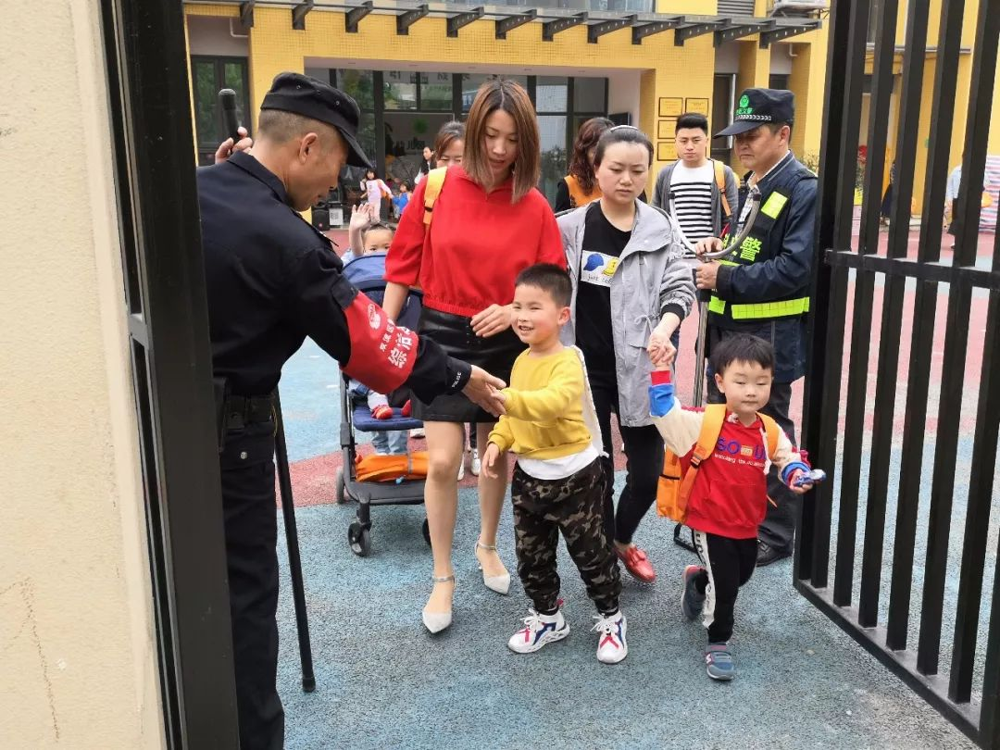
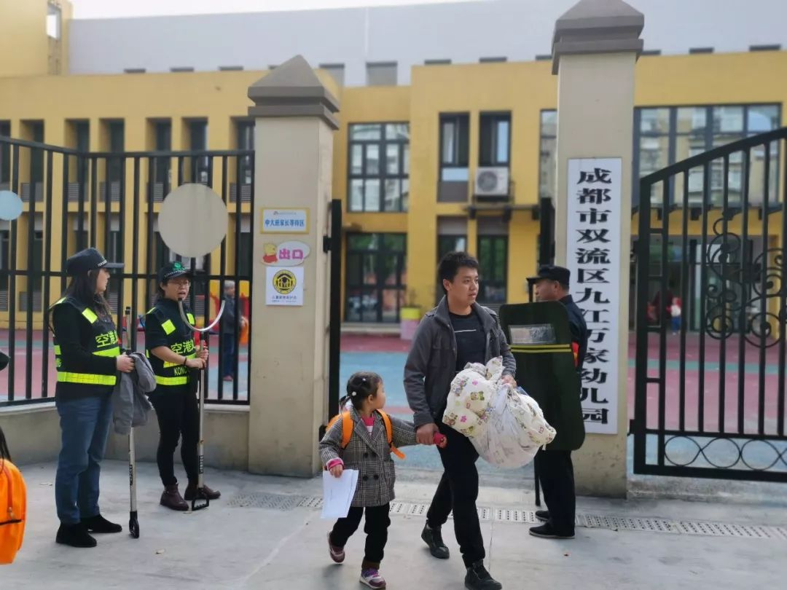

九江万家幼儿园 成都市双流区九江万家幼儿园 2019-04-26 16:05 发表于四川
走过路过不要错过
点击蓝字关注我们
家长护卫队 感恩有您
为了营造平安校园的氛围，进一步完善校园治安防控体系，强化安全责任意识，我园开展了家长义工护卫队活动。担任义工护卫队的是我们家长朋友们，他们每天都准时来到幼儿园门口执勤，确保每一个孩子快乐上学、放学。
幼儿园门前，家长们佩戴执勤牌、穿好执勤衣，每天早上提前来到幼儿园，和保安、值班老师一起面带微笑迎接每一个孩子。
一声声满怀热情地“早上好”让宝贝们心里甜滋滋的，他们也情不自禁的回应“老师早上好”、“叔叔、阿姨早上好”。他们有序的组织入园的孩子，直到所有的孩子都安全入园。
下午，护卫队的家长们又早早的来到幼儿园，依旧热情的同宝贝们说“宝贝们下午好，明天见”。
家长护卫队这种热心行为不仅加强了学校的安保力量，更重要的是加强了家校之间的联系，拉近了家长与孩子之间的距离，也打开了教育的另一扇视窗，让家庭、学校共同肩负起教育的神圣职责，共同努力营造良好的育人环境，共同努力构建和谐校园。
感谢护卫队家长们的辛苦执勤。你们的出现是暖心的阳光是孩子们的生命卫士，也是老师们的强大后盾！相信有你们的支持、理解与配合，九江万家幼儿园会越来越好！
阅读 99
分享 收藏
赞 1









